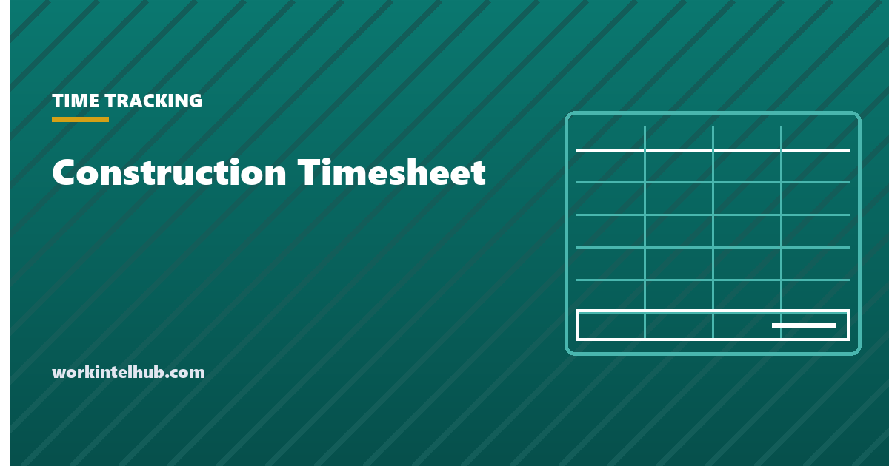

Construction Timesheet

A construction timesheet does two jobs an office timesheet never has to. It has to cost labour to the right part of the right job, and on public work it has to survive being submitted to the government every week with a signature attached.
Those two requirements decide the columns. Get them wrong and you find out either at month-end, when the job costs do not reconcile, or considerably later, when someone asks for three years of payroll records you cannot produce.
The columns a construction sheet needs
Four beyond the ordinary in, out and break.
| Field | Why it is there | What breaks without it |
|---|---|---|
| Job or project | Which job carries the cost | Labour lands in overhead |
| Cost code or phase | Which part of the job | Job totals are right, the estimate comparison is useless |
| Classification | Trade and level actually worked | Certified payroll cannot be produced |
| Hours by code, per day | A day split across codes or jobs | Whole day charged to whichever site was listed first |
The fourth is the one that separates a real construction sheet from an office one with extra columns. A crew member who spends the morning on footings and the afternoon on framing has worked one day and two cost codes, and the sheet has to hold both without a second row contradicting the first on start and end times.
Date Employee Job Cost code Classification In Out Break Hours Notes
One row per code, not per day. The day's total is the sum of its rows, and that total is what has to reconcile against the crew's actual shift.
Daily check: =SUMIFS(hours, date, A2, employee, B2) against the shift length,
flagged where the two differ.
Classification is not job title
On prevailing wage work the rate follows the work actually performed, not the person's usual title or their pay grade. Someone who normally runs a crew but spends a day operating equipment is paid the operator rate for that day.
That means classification belongs on the timesheet row rather than in the employee record, which is where most systems put it. If classification is an attribute of the person, a day split between two trades cannot be recorded correctly, and the certified payroll built from it will be wrong in a way nobody notices until it is audited.
The same principle covers apprentices. Apprentice rates depend on registration in a recognised programme and on the ratio of apprentices to journeyworkers actually on site, so the sheet has to record who was present, not only who was scheduled.
Certified payroll, and what the record has to contain
On federally funded construction contracts over $2,000 the Davis-Bacon requirements apply, and they are more demanding than ordinary FLSA recordkeeping.
29 CFR 5.5(a)(3) requires the contractor and every subcontractor to maintain regular payrolls and basic records during the work and to preserve them for three years after the project is completed. Note the trigger: completion of the work, not the end of the tax year or the pay period, which is a longer and differently-timed clock than the two years ordinary time cards require.
The records must cover, for each worker: name, Social Security number, address, phone and email, job classifications, hourly rates, daily and weekly hours worked, deductions, and the wages actually paid.
Certified payrolls must be submitted weekly for each week in which covered work is performed. Each is accompanied by a statement of compliance certifying three things: that the payroll information is accurate and complete, that each worker received their full weekly wages without rebate or improper deduction, and that workers were paid the applicable rates and fringe benefits for the classifications they actually performed.
The practical consequence for the timesheet is that a weekly cycle is not optional. A monthly construction timesheet cannot produce a weekly certified payroll, and reconstructing one after the fact is exactly the situation the statement of compliance is designed to make uncomfortable to sign.
Making the cost side actually useful
Most construction timesheets produce accurate totals and useless information, because the hours arrive after the decision they should have informed.
Three practices change that, and none of them requires new software.
- Code at entry, not at review. A foreman assigning codes on Friday for the whole week is guessing. The cost data is then precise and wrong, which is worse than approximate and honest.
- Compare to the estimate weekly, by code. Job-level totals tell you a job is over. Code-level totals tell you which activity, while there is still enough of the job left to respond.
- Keep the code list short. A list nobody can hold in their head gets resolved by picking whichever code is nearest the top. Twenty codes used accurately beat two hundred used approximately.
Hours by code: =SUMIFS(hours, job, "Job A", code, "03-300")
Against estimate: =actual_hours / estimated_hours
Earned value: =percent_complete * estimated_hours - actual_hours
The third line is the one worth adding. Hours over estimate only means overrun if the work is not correspondingly further along, and comparing spend to progress rather than to budget is what distinguishes a real problem from a fast start.
Multi-site days, travel and the awkward hours
Three recurring questions, and the timesheet has to take a position on each because the crew will otherwise take their own.
Travel between sites. Time spent travelling from one job site to another during the working day is generally hours worked. The ordinary home-to-first-site commute generally is not. A sheet with no travel row pushes that time into whichever job happens to be listed, which distorts both jobs.
Tool and equipment time. Loading, prep and clean-up at the yard are work. Where they are recorded matters for costing, because they belong to the job that generated them rather than to overhead by default.
Waiting. Time on site waiting for materials, inspection or another trade is hours worked, and it is also the single most valuable number on a construction timesheet because it is the one that can be reduced. Give it a code rather than letting it disappear into the activity it delayed.
On the general rules for which hours count, our page on what a timesheet must record covers the federal position, and state law can be stricter.
Getting the sheet filled in on site
The construction-specific failure is not accuracy, it is collection. Crews are not at desks, signal is unreliable, and hands are dirty.
- One person per crew records, not each individual. A foreman entering a crew of six is one interaction rather than six, and it is the arrangement most crews already use informally.
- It has to work offline. Anything that fails without signal gets reconstructed from memory at the end of the week, which is where the accuracy actually goes.
- Capture at the change, not at the end. Recording the switch when the crew moves from footings to framing takes seconds. Recalling it on Friday does not happen.
- Photograph the paper if paper is what works. A photographed daily sheet entered once by the office beats a digital system the crew does not use.
If you are considering GPS or geofenced clock-ins to solve this, read our page on employee GPS tracking first. It is lawful in most of the country on company assets, and it carries notice duties that vary by state.
Key takeaways
- A construction timesheet needs job, cost code, classification and hours split by code within a single day.
- Classification belongs on the row, not on the employee record, because the prevailing wage rate follows the work actually performed.
- Davis-Bacon records must be preserved three years after project completion, a longer and differently-timed clock than the usual two years for time cards.
- Certified payrolls are weekly, with a statement of compliance covering accuracy, full wages without rebate, and correct classification rates.
- A monthly construction timesheet cannot produce a weekly certified payroll.
- Code at entry rather than at Friday review, or the cost data becomes precise and wrong.
- Give waiting time its own code. It is the most reducible cost on the sheet and the easiest to lose.
Frequently asked questions
What should a construction timesheet include?
Beyond date, in, out and break: the job, the cost code or phase, the classification actually worked, and hours split by code within the day. The split matters because a crew member can work two cost codes in one shift, and a sheet that cannot record that charges the whole day to one of them.
How long do I have to keep construction payroll records?
On Davis-Bacon covered work, 29 CFR 5.5(a)(3) requires payrolls and basic records to be preserved for three years after the project is completed. That is a different and usually longer clock than the two years ordinary time cards must be kept under the FLSA recordkeeping rules.
How often is certified payroll submitted?
Weekly, for each week in which covered work is performed, with a statement of compliance attached. The statement certifies that the payroll is accurate and complete, that each worker received full weekly wages without rebate or improper deduction, and that the applicable rates and fringe benefits were paid for the classifications actually performed.
Does the prevailing wage rate follow the person or the work?
The work. A worker paid the applicable rate for the classification actually performed means someone who normally supervises but spends a day operating equipment is paid the operator rate for that day. This is why classification has to be recorded per row rather than held as an attribute of the employee.
Is travel between job sites paid time?
Travel from one site to another during the working day is generally hours worked, while the ordinary commute from home to the first site generally is not. Give travel its own code, because otherwise the time is absorbed by whichever job is listed on the row and distorts the cost of both.
How do I track hours when a crew works two jobs in one day?
One row per cost code rather than one row per day, with the day's rows summing to the actual shift. Add a check that compares the sum of an employee's rows for a date against the shift length and flags any difference, which catches both double-counting and missing time.
Do I need software or will a spreadsheet do?
A spreadsheet handles the arithmetic fine. What it handles badly is collection from crews who are not at desks and often without signal, and the weekly certified payroll cycle if you are on public work. The practical break point is usually multiple crews across multiple sites rather than a headcount threshold.